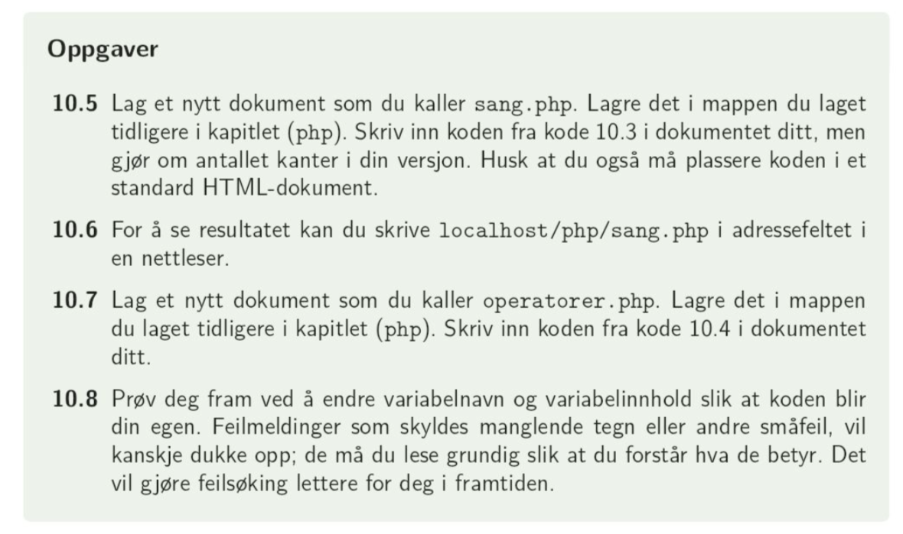

Variabler brukes til å holde orden på verdier underveis i et program. Slike verdier kan være tekst (f.eks. navn), tall (f.eks. konstanter) eller de boolske verdiene sann eller usann.
For å fortelle programmet at vi lagrer en variabel, bruker vi symbolet $:
< ?php
$fornavn = 'Asta';
$etternavn = 'Fjærli';
$alder = 27;
// disse variablene kan vi skrive ut med kommandoen echo eller print
echo 'navnet er $fornavn $etternavn og alderen er $alder år';
? >
Skriv inn koden over i online-editoren, men bytt ut med ditt eget navn og alder. Kjør koden i online-editoren
Regler for å sette variabelnavn:
Datatypen string brukes for tekstvariabler. All tekst skal legges i ("tekst")
< ?php
$tekstVar = "En setning med tekst!";
? >
Number er alle tallvariabler: heltall, decimaltall, negative tall, positive tall. Vi kaller heltall for datatypen integer og decimaltall for datatypen float. Vi lagrer alle numbervariabler som
< ?php
$tallVar = 1;
$tallVar = 1.0;
$tallVar = -157.42
? >
Vi har to boolske variabler: sann (1) og usann (0). Disse legger blant annet grunnlag for if-setninger (kommer senere), der vi ber om at kode skal kjøres dersom en påstand er sann, eller usann.
Boolske variabler lagres som
< ?php
$boolskVar = true;
$boolskVar = false;
? >
I tillegg kan vi samle variabler i datakolleksjonene array og object, dette kommer vi tilbake til senere i kapittelet.
For datatypen tall kan vi bruke de aritmetiske operatorene +, -, *, /, % og **. Den siste (**) støttes dessverre kun i nyeste utgaver, og ikke når vi kjører kode gjennom Wamp.
| Operator | Forklaring | Eksempel |
|---|---|---|
| + | Addisjon | $add = a + b; |
| - | Subtraksjon | $sub = c - b; |
| * | Multiplikasjon | $multi = b * c; |
| / | Divisjon | $divi = c / b; |
| % | Modulus (restregning) | $rest = c % a; |
| ** | Eksponent | $eksp = a**b gir a^b |
< ?php
$a = 10;
$b = 15;
$c = 2;
$d = 7;
$add = $a + $b;
$sub = $b - $c;
$prod = $a * $c;
$div = $a / $c;
$mod = $d % $c;
$eksp = $d ** $c;
echo "$a + $b av $a og $b er $add. $b - $c = $sub. $a * $c = $prod. $a / $c = $div. $d % $c = $mod (dvs hva d / c gir i rest). $d ^ $c = $eksp";
? >
s. 109: oppgave 10.1 - 10.4.
NB: du kan ikke skrive localhost/php/sang.php som skrevet i oppgave 10.6, men må skrive 127.0.0.1/php/sang.php
For å slippe å bruke tid på avskrift: bruk kodeeksempler fra boka som kan lastes ned her: kodeeksempler (høyreklikk og åpne i nytt vindu, pakk ut filer og flytt til php-mappen din)
